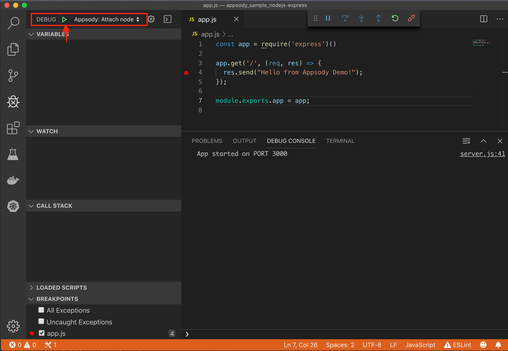
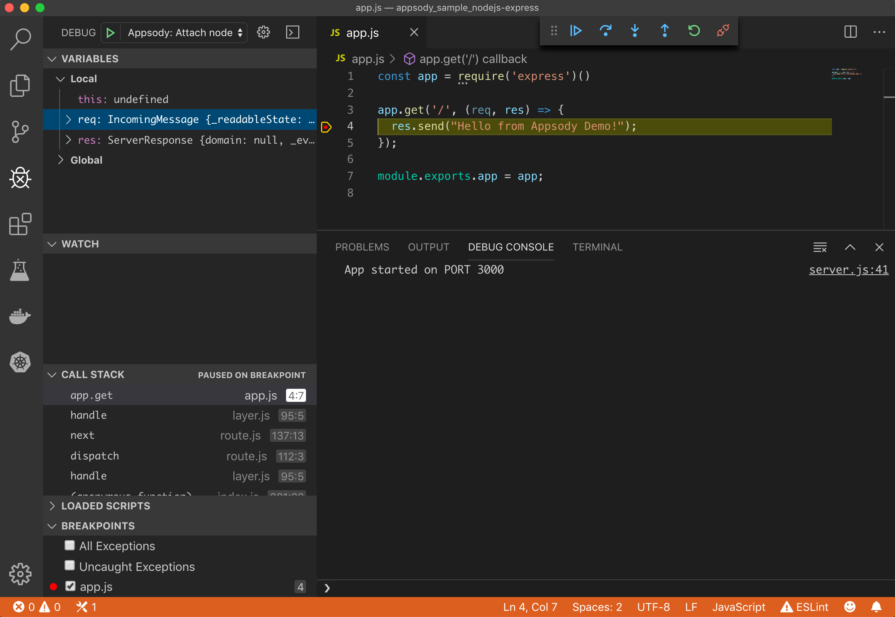
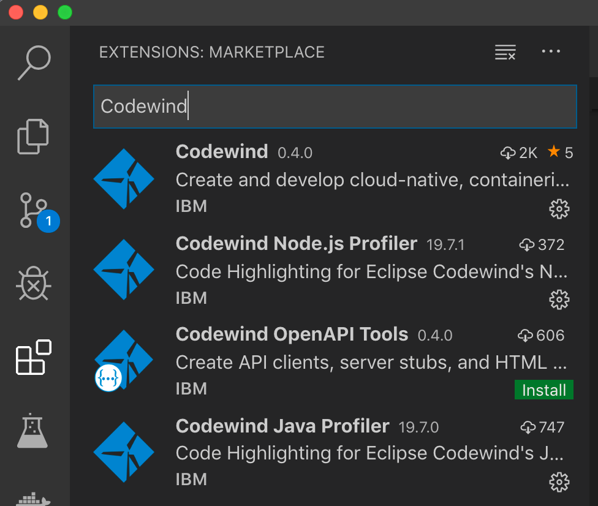
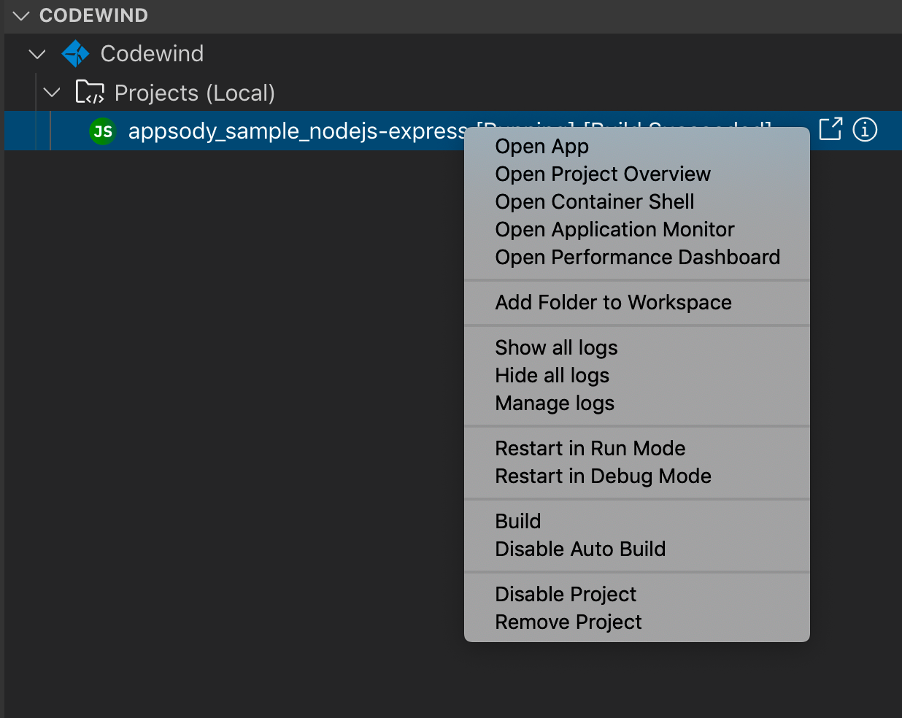
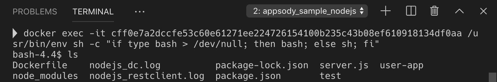
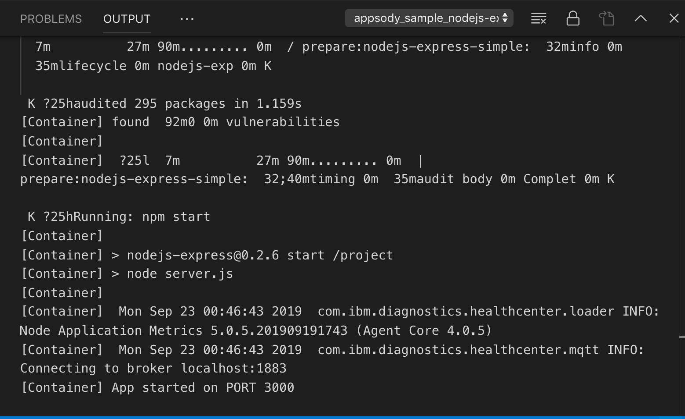
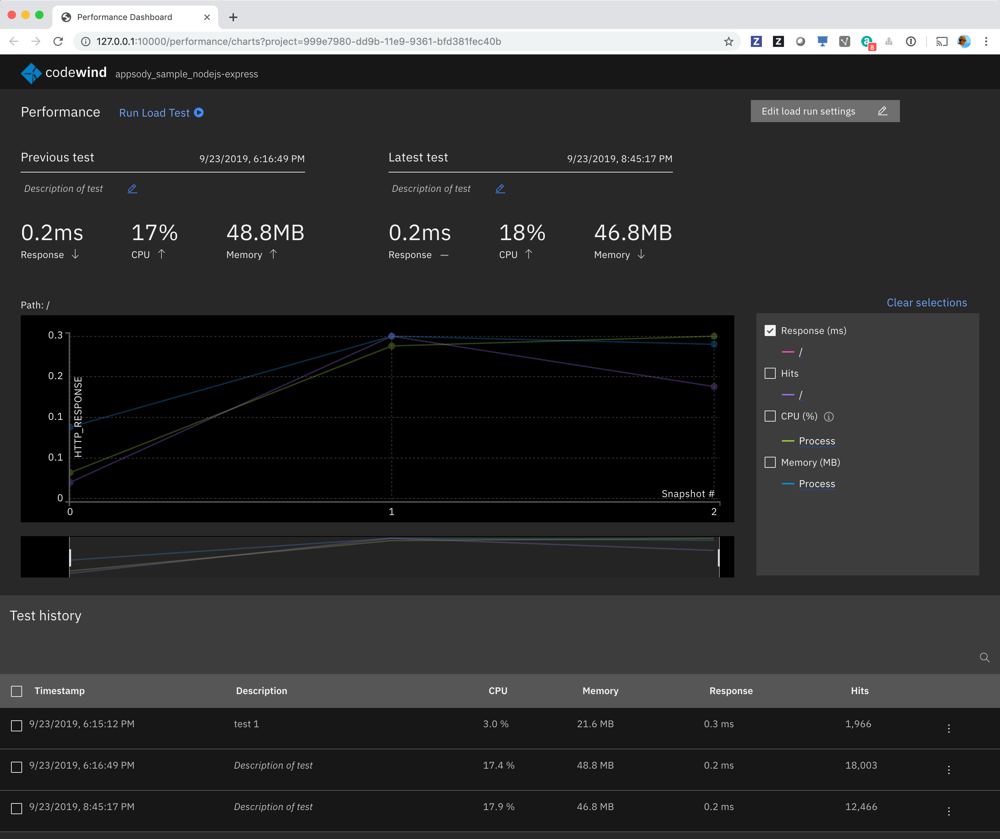

Exercise 1: Introduction to Appsody and Codewind¶
In this exercise, we will introduce Appsody, which is the underpinning development flow in Kabanero, along with its integration into IDEs using Codewind. In particular you will become experienced with:
- the components of the Appsody development toolbox
- the concept of pre-configured "stacks" and templates for popular open source runtimes (such as Node.js and Spring Boot) on which to build applications
- the Appsody command-line interface to develop containerized applications, how to run and test them locally,
Prerequisites¶
You should have already carried out the prerequisites defined in the Pre-work. Check that you have access to the Appsody CLI by typing (the exact version number my be greater than shown below):
NOTE: In the exercises that follow you will see the actual command to run, followed by a separate example of running the command with the expected output. You only need to run the first example and never need to run a command you see preceded by a "$". You can even use the copy button on the right side of the command to make copying easier.
appsody version
You should see output similar to the following:
$ appsody version
appsody 0.5.3
Steps¶
- Configure Appsody CLI
- Use Appsody CLI to build, test, run, and debug
- Appsody tasks on VS Code
- Codewind on VS Code
1. Configure Appsody CLI¶
In this section we'll configure our Appsody CLI to pull in Collections.
List existing Appsody stacks¶
The Appsody CLI gives you access to stacks, which are stored in stack repositories. These can be local, private to the Enterprise or public. To get the list of available repos, run this command.
appsody repo list
You should see output similar to the following:
$ appsody repo list
NAME URL
*incubator https://github.com/appsody/stacks/releases/latest/download/incubator-index.yaml
The exact repo list may be different to the above. incubator is one of the repos in the appsody project public hub (appsodyhub). For this workshop we are going to use the private enterprise-grade collection of stacks that come with the Kabanero open source project (which is part of Cloud Pak for Applications). So the first thing we need to do is to tell the CLI about this.
Add Collection to Appsody¶
From the Cloud Pak for Applications landing page get the CollectionHub URL, for example:
https://github.com/kabanero-io/collections/releases/download/v0.1.2/kabanero-index.yaml
Use the appsody CLI to add the Collection repo.
appsody repo add kabanero https://github.com/kabanero-io/collections/releases/download/0.2.1/kabanero-index.yaml
Now when we get our list of repos, we should see Kabanero listed:
appsody repo list
You should see output similar to the following:
$ appsody repo list
NAME URL
*incubator https://github.com/appsody/stacks/releases/latest/download/incubator-index.yaml
kabanero https://github.com/kabanero-io/collections/releases/download/v0.1.2/kabanero-index.yaml
We can now list the appsody stacks available in the Collection:
appsody list kabanero
You should see output similar to the following:
$ appsody list kabanero
REPO ID VERSION TEMPLATES DESCRIPTION
kabanero java-microprofile 0.2.11 *default Eclipse MicroProfile on Open Liberty & OpenJ9 using Maven
kabanero java-spring-boot2 0.3.9 *default, kotlin Spring Boot using OpenJ9 and Maven
kabanero nodejs 0.2.5 *simple Runtime for Node.js applications
kabanero nodejs-express 0.2.5 *simple, skaffold Express web framework for Node.js
kabanero nodejs-loopback 0.1.4 *scaffold LoopBack 4 API Framework for Node.js
Given that we'll exclusively be using the kabanero stacks in this workshop, for ease of use we can set the kabanero repository to be the default for the CLI:
appsody repo set-default kabanero
Now is we get the list of repos, we should see kabanero is the default:
appsody repo list
You should see output similar to the following:
$ appsody repo list
NAME URL
*kabanero https://github.com/kabanero-io/collections/releases/download/v0.1.2/kabanero-index.yaml
incubator https://github.com/appsody/stacks/releases/latest/download/incubator-index.yaml
2. Use Appsody CLI to build, test, run, and debug¶
In this section we'll be using the following appsody commands:
appsody initappsody runappsody testappsody debugappsody build
Create a new directory to work with new applications¶
We recommend creating a new directory from your user home to work with new Appsody based applications, i.e.:
cd ~
mkdir appsody-apps
cd appsody-apps
Create a new application¶
We will now use one of the stacks to create an application. First, create a new directory for the project and change directory into it.
mkdir appsody_sample_nodejs-express
cd appsody_sample_nodejs-express/
Initialize the project using appsody init:
appsody init kabanero/nodejs-express
The directory has been initialized with a minimal set of artifacts (which is, in fact, a sample application that uses the chosen stack)
.
├── .appsody-config.yaml
├── .gitignore
├── .vscode
│ ├── launch.json
│ └── tasks.json
├── app.js
├── package-lock.json
├── package.json
└── test
└── test.js
The key artifacts are:
-
app.js Node.js application module (the default sample application is a simple "hello world")
-
package.json NPM package JSON file
-
test.js A simple test module
Run the application¶
The sample application comes ready to run using appsody:
appsody run
This step results in the stack image, with the sample application mounted into it, run in your local Docker environment. The output finishes by giving you the endpoint for the application.
Running development environment...
Running command: docker pull kabanero/nodejs-express:0.2
Running docker command: docker run --rm -p 3000:3000 -p 8080:8080 -p 9229:9229 --name appsody-sample-nodejs-express-dev -v /Users/csantanapr/dev/kabanero/appsody_sample_nodejs-express/:/project/user-app -v appsody-sample-nodejs-express-deps:/project/user-app/node_modules -v /Users/csantanapr/.appsody/appsody-controller:/appsody/appsody-controller -t --entrypoint /appsody/appsody-controller kabanero/nodejs-express:0.2 --mode=run
[Container] Running APPSODY_PREP command: npm install --prefix user-app
audited 295 packages in 1.546s
[Container] found 0 vulnerabilities
[Container]
[Container] Running command: npm start
[Container]
[Container] > nodejs-express@0.2.6 start /project
[Container] > node server.js
[Container]
[Container] [Sun Sep 22 23:29:50 2019] com.ibm.diagnostics.healthcenter.loader INFO: Node Application Metrics 5.0.5.201909191743 (Agent Core 4.0.5)
[Container] [Sun Sep 22 23:29:51 2019] com.ibm.diagnostics.healthcenter.mqtt INFO: Connecting to broker localhost:1883
[Container] App started on PORT 3000
We can now check that this is running by hitting the endpoint http://localhost:3000:
curl http://localhost:3000
You should see output similar to the following:
$ curl http://localhost:3000
Hello from Appsody!
By default, the template sample application also provides the following endpoints.
- Readiness endpoint: http://localhost:3000/ready
- Liveness endpoint: http://localhost:3000/live
- Health check endpoint: http://localhost:3000/health
- Metrics endpoint: http://localhost:3000/metrics
For more details on this particular stack, refer to Node.js Express Stack.
Stop the application¶
To stop the application container, run this command from the same directory (e.g. in another terminal window):
appsody stop
Test the application¶
A stack will typically come with a test framework - and this can be initiated by running:
appsody test
You should see output similar to the following:
$ appsody test
Running test environment
Running command: docker pull kabanero/nodejs-express:0.2
Running docker command: docker run --rm -p 3000:3000 -p 8080:8080 -p 9229:9229 --name appsody-sample-nodejs-express-dev -v /Users/csantanapr/dev/kabanero/appsody_sample_nodejs-express/:/project/user-app -v appsody-sample-nodejs-express-deps:/project/user-app/node_modules -v /Users/csantanapr/.appsody/appsody-controller:/appsody/appsody-controller -t --entrypoint /appsody/appsody-controller kabanero/nodejs-express:0.2 --mode=test
[Container] Running APPSODY_PREP command: npm install --prefix user-app
added 170 packages from 578 contributors and audited 295 packages in 2.76s
...
[Container] Running command: npm test && npm test --prefix user-app
[Container]
[Container] > nodejs-express@0.2.6 test /project
[Container] > mocha
...
[Container] App started on PORT 3000
...
[Container]
[Container] 7 passing (44ms)
[Container]
[Container]
[Container] > nodejs-express-simple@0.1.0 test /project/user-app
[Container] > mocha
[Container]
...
[Container] App started on PORT 3000
[Container] Node.js Express Simple template
[Container] / endpoint
[Container] ✓ status
[Container]
[Container]
[Container] 1 passing (40ms)
[Container]
[Container] The file watcher is not running because no APPSODY_RUN/TEST/DEBUG_ON_CHANGE action was specified or it has been disabled using the --no-watcher flag.
Debug the application¶
As well as supporting the running and testing of your application, an appsody stack enables the execution of your application in debug mode. Typically the stack will be configured to support whatever the appropriate debugger is for the language and technology components within it.
Open an IDE for debugging the application. The examples here will be based on VS Code. After starting the IDE add the project to your workspace or launch VS Code using code from the application directory.`

Open a new terminal window inside VS Code use View -> Terminal
To debug the application including reloading the application on code changes run the below command:
appsody debug
The output indicates the debug environment is being used
Running debug environment
Running command: docker pull kabanero/nodejs-express:0.2
Running docker command: docker run --rm -p 3000:3000 -p 8080:8080 -p 9229:9229 --name appsody-sample-nodejs-express-dev -v /Users/csantana23/dev/kabanero/appsody_sample_nodejs-express/:/project/user-app -v appsody-sample-nodejs-express-deps:/project/user-app/node_modules -v /Users/csantana23/.appsody/appsody-controller:/appsody/appsody-controller -t --entrypoint /appsody/appsody-controller kabanero/nodejs-express:0.2 --mode=debug
[Container] Running APPSODY_PREP command: npm install --prefix user-app
audited 295 packages in 1.154s
[Container] found 0 vulnerabilities
[Container]
[Container] Running command: npm run debug
[Container]
[Container] > nodejs-express@0.2.6 debug /project
[Container] > node --inspect=0.0.0.0 server.js
[Container]
[Container] Debugger listening on ws://0.0.0.0:9229/35c7d2cb-ced9-4c57-94f1-a58a5e078302
[Container] For help, see: https://nodejs.org/en/docs/inspector
[Container] [Sun Sep 22 23:38:35 2019] com.ibm.diagnostics.healthcenter.loader INFO: Node Application Metrics 5.0.5.201909191743 (Agent Core 4.0.5)
[Container] [Sun Sep 22 23:38:35 2019] com.ibm.diagnostics.healthcenter.mqtt INFO: Connecting to broker localhost:1883
[Container] App started on PORT 3000
Now you can again open the application at http://localhost:3000/

Make an update to the application by opening the app.js file and editing the message. Then save the file.
Appsody will now rebuild the container and reload the application for you.
Refresh the browser to see the changes:
You can attach to the Node.js debugger using VS Code. To access the debug view use View -> Debug or click Debug icon on left menu:
Add a breakpoint to the application, click to the left of the line number:

Click on the debug task Appsody: Attach node and click the Play button:

Refresh the browser and watch how the debugger stops at the breakpoint:

Stop the VS Code debugging session (by pressing the red stop/disconnect icon). From the application directory, stop the appsody debug session by entering appsody stop in a terminal window.
Build the application¶
Up until now, we have been using appsody in what we call "Rapid Local Development Mode", where we can cycle through code change, test and debug - all within a local Docker environment. Appsody is making this environment possible, through a combination of the CLI, the stack and appsody code within that stack. Once you are ready to deploy the application outside of appsody control, there are two additional appsody commands to help you.
These enable a couple of capabilities:
- support for building a standalone docker image (containing your application and the stack technologies), that can be deployed either using regular Docker commands, or manually to a kubernetes cluster.
- support deploying the final image directly to a kubernetes cluster, under control of the Appsody Operator. We will cover deployment in Exercise 3.
In this section we will carry out the first of these - i.e. simply building a standalone image. Perhaps unsurprisingly, this is enacted by:
appsody build
You should see output similar to the following:
$ appsody build
.
.
.
[Docker] Removing intermediate container 264b4dd86f2c
[Docker] ---> 3a7e5ca613f2
[Docker] Step 20/21 : EXPOSE 3000
[Docker] ---> Running in fb7b734205a8
[Docker] Removing intermediate container fb7b734205a8
[Docker] ---> badce710593d
[Docker] Step 21/21 : CMD ["npm", "start"]
[Docker] ---> Running in 961a344e2c68
[Docker] Removing intermediate container 961a344e2c68
[Docker] ---> e417d7dfc54c
[Docker] Successfully built e417d7dfc54c
[Docker] Successfully tagged appsody-sample-nodejs-express:latest
Built docker image appsody-sample-nodejs-express
We now have a standalone image (independent of appsody). We can view the image using our local Docker environment:
docker images
You should see output similar to the following:
$ docker images
REPOSITORY TAG IMAGE ID CREATED SIZE
appsody-sample-nodejs-express latest 0be125eee32c 3 minutes ago 945MB
We can run this with our local Docker environment in the normal way (making sure we map the exposed port):
docker run -p 3000:3000 appsody-sample-nodejs-express
You should see output similar to the following:
$ docker run -p 3000:3000 appsody-sample-nodejs-express
...
> nodejs-express@0.2.6 start /project
> node server.js
...
[Tue Oct 1 19:49:45 2019] com.ibm.diagnostics.healthcenter.loader INFO: Node Application Metrics 5.0.5.201910011945 (Agent Core 4.0.5)
[Tue Oct 1 19:49:46 2019] com.ibm.diagnostics.healthcenter.mqtt INFO: Connecting to broker localhost:1883
App started on PORT 3000
Again, hitting the endpoint of http://localhost:3000/ should give us the hello message.
You now have seen the basics of the appsody CLI in operation. We'll now take things up a level, and see how the CLI can be integrated into an IDE (VS Code in this case). Before we do this, terminate the current docker run using Ctrl-C.
3. Appsody tasks on VS Code¶
To access the build tasks on VS code, go to: Terminal > Run Build Task...
You will see a list of available tasks:
Click on Appsody: run and this will run the application:

Once it is successfully started, you can, again, access the application at http://localhost:3000/:
You can also run the Appsody: stop task:
4. Codewind on VS Code¶
Codewind simplifies and enhances development in containers by extending industry-standard IDEs with features to write, debug, and deploy cloud-native applications. It helps you to get started quickly with templates or samples, or you can also pull in your applications and let Codewind get them cloud-ready.
Codewind supports VS Code, Eclipse Che, and Eclipse. In this lab, we are using VS Code as our IDE.
Getting the Codewind extension¶
To get codewind extension you need VS Code version 1.28 or later.
Go to the extensions view and search for Codewind from the VS Code marketplace:

You will find Codewind then click install to get it. Also, if you want to use Codewind for Node.js performance analysis, you need to install Codewind Node.js Profiler.
Once installed, in VS Code, go to View > Open View ...
It gives you you a list of options. Select Codewind:
This opens Codewind:
Adding the application¶
You can create a new project or add an existing project to Codewind. Since, we already created one using appsody earlier, we can add the existing project. In order to do this, we must first copy the project to the codewind workspace (which is codewind-workspaces/ in your HOME directory on macOS, or typically C:\codewind-workspace on Windows). For example, on macOS:
cd ~
cp -R appsody-apps/appsody_sample_nodejs-express codewind-workspaces
To add the project, right click (or Ctrl-click) on Projects under Codewind. Select Add Existing Project in the menu:
From the codewind workspace, select the project you created earlier:
The codewind extension asks you for confirmation as follows. Click Yes. The project will be added.
Once it is successfully built, it starts running:
You can open the CodeWind workspace, right click on Projects:
Project options¶
Go to the application and right click on it to access the various options available:

Click Open App to access the application:
NOTE Codewind exposes your applications on different external ports. This will allow you to run multiple projects of same type.
To get the overview of your project, click on Open Project Overview:
You can access the container shell directly from the IDE by using Open Container Shell:

To access the logs of the application, click on Show all logs:

You can also hide the logs if you want to by using Hide all logs option:
If you have multiple applications and want to manage the logs for them, you can use Manage logs:
You can also run the application by using Restart in Run Mode:
Once it is restarted, you can access the application by clicking on the button as shown below:
Similarly, you can also do debugging by using Restart in Debug Mode.
Application Performance, Monitor, Profiling with Codewind¶
You can launch the app monitor by selecting Open Appplication Monitor:
The monitor dashboard will open in the browser:

You can launch the app performance dashboard by selecting Open Performance Dashboard:
The performance dashboard will open in the browser:

You can click Run Test and have Monitor and Performance dashboards side by side during the test:

NOTE: Profiling the node.js code is currently not working, an issue is opened on the github repo for the codewind node.js profiler extension.
Congratulations! You've just completed the intro exercises for Appsody and Codewind!